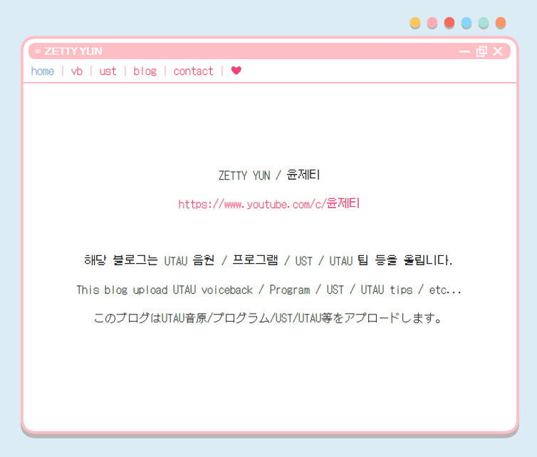
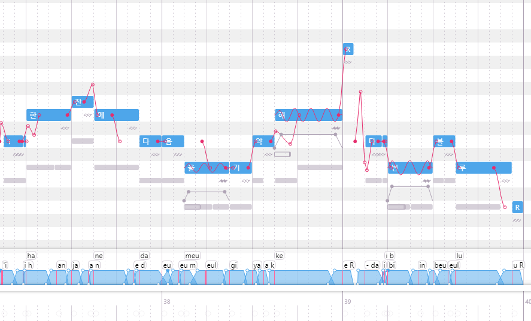
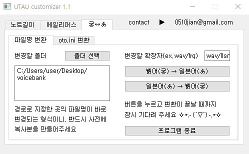

- 직접 모든 쿼리를 입력하지 않고 findBy, findAll 쿼리를 사용하여 간단하게 데이터를 조회할 수 있습니다.
프론트엔드
HTML
- 다양한 태그를 사용하여 구조적인 페이지 레이아웃을 구현할 수 있습니다
CSS
- 다양한 속성을 사용하여 웹페이지를 스타일링 할 수 있습니다
javascript
- 기본 문법에 따라 코드를 작성할 수 있습니다
- DOM을 사용하여 HTML 요소를 조작할 수 있습니다
- 웹페이지 내에 동적인 기능을 구현할 수 있습니다
thymeleaf
- thymeleaf 태그를 사용하여 동적 페이지를 구현할 수 있습니다
- th:if, th:each 등 thymeleaf의 조건문, 반복문을 사용할 수 있습니다
협업
Github
- Git으로 프로젝트를 관리할 수 있습니다
- fork, branch, pull request를 사용하여 새로운/기존의 repository의 개발에 참여할 수 있습니다

음성합성엔진 자료 배포 웹사이트
2022.09.05 ~ 2022.09.19
Java
Spring Boot
MySQL
MyBatis
javascript
thymeleaf
음성 합성 엔진과 관련된 파일을 정리하고 배포하기 위한 개인 웹사이트입니다. Spring Boot 기반으로 로그인, 게시글의 CRUD, 이미지 업로드 기능을 구현하였습니다.
직접 배포, 웹 호스팅, 도메인 관리, 사이트 운영/관리를 진행하며 전반적인 웹 개발 및 관리 경험을 쌓을 수 있었습니다.
반려동물 올인원 펫플랫폼 BOBJO
2022.09.01 ~ 2023.05.10
Java
Spring Boot
MySQL
MyBatis
javascript
thymeleaf
반려동물과의 일상을 담은 일기, 산책 메이트, 커뮤니티, 분양 등 다양한 서비스를 올인원으로 제공하는 웹 서비스입니다. Google Gmail SMTP를 이용한 이메일 전송, 회원 가입, 퀴즈/인증 기능, 플로트 알림창을 구현하였습니다.
처음으로 외부 API(카카오 지도 API)의 사용 방법을 학습하고 적용한 프로젝트입니다.

OpenUtau
2021.09.29 ~ 2022.10.22
C#
오픈소스
음성 합성 엔진을 더욱 편리하게 사용하기 위해 개발된 음성 합성 소프트웨어입니다. 한국어 음원의 활성화를 위해 한국어 Phonemizer(음성화 프로세서)의 개발을 담당하였습니다.
다른 사람이 작성한 코드를 분석하여 프로그램의 흐름과 기능을 파악하고, C#을 공부하여 새로운 기능을 개발해 오픈소스에 기여하는 경험을 가질 수 있었습니다.

UTAU customizer
2019.08.16 ~ 2023.05.05
Python
Qt Designer
음성 합성 소프트웨어의 원활한 사용을 돕기 위한 소프트웨어입니다. 파일의 인코딩 변환, 길이 및 파일 내용 일괄 변경 등의 기능을 포함하고 있습니다. 소프트웨어의 통합화, 공통 코드의 함수화 등 가장 많은 리팩토링과 업데이트를 거친 소프트웨어입니다. 개발의 즐거움을 느끼게 해 준 첫 소프트웨어로, 다운로드 페이지의 조회수 1,000회 이상을 달성하였습니다.
무비로
2022.04.13 ~ 2022.06.01
Java
javascript
JSP
영화 예매/관리 시스템을 제공하는 웹사이트입니다. DB 학습을 위해 개발하였습니다. ERD 설계, DOM과 javascript를 사용하여 영화의 조회 및 예매, 좌석 선택, 영화/극장 관리 기능을 구현하였습니다. JSP를 사용하여 처음으로 프론트엔드와 DB를 연결한 프로젝트이며 다른 개발자와의 협업 경험을 쌓을 수 있었습니다.

 010-3109-6282
010-3109-6282 0510jian@gmail.com
0510jian@gmail.com